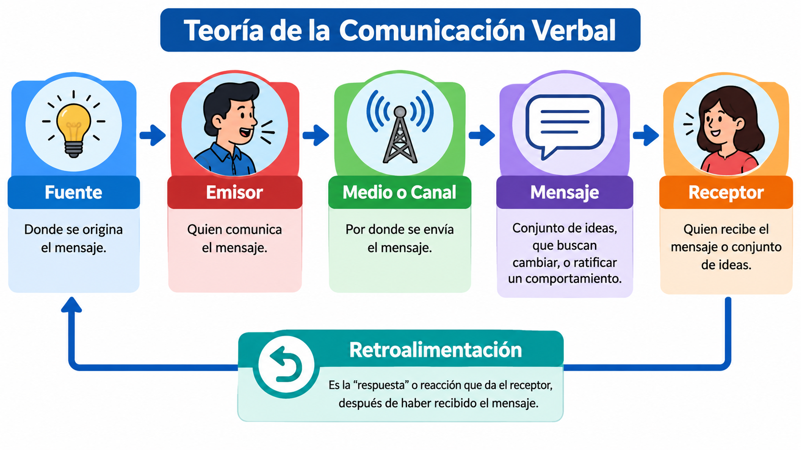
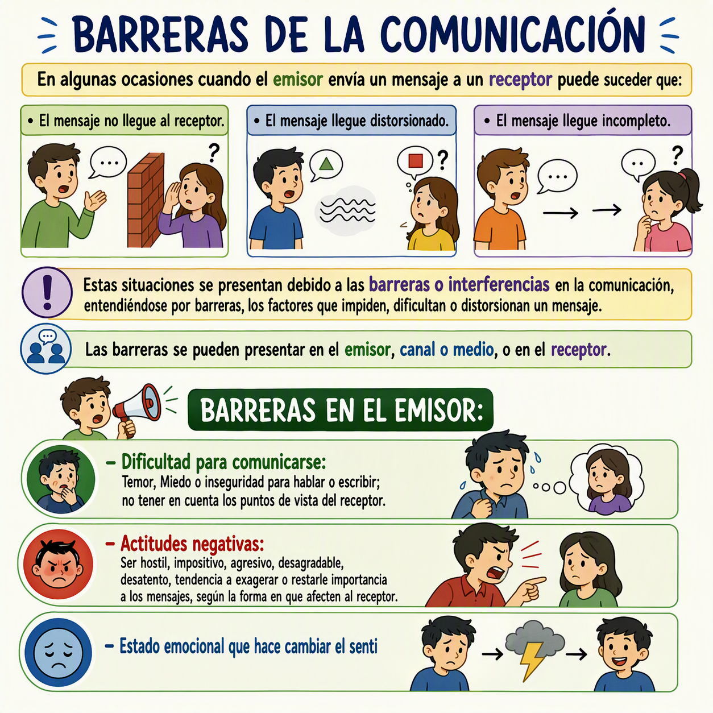

1. La Comunicación Humana
Se puede definir la comunicación como "el acto mediante el cual establecemos relaciones con los demás e influimos sobre ellos con el fin de cambiar o ratificar su comportamiento."
Es el fenómeno que caracteriza al hombre, pues este es capaz de convertir en comunicación todo lo que le rodea, desde sus gestos, sus vestidos y los objetos que él elabora, hasta la misma naturaleza.
La efectividad de la comunicación no depende de la cantidad de ideas que se transmitan, sino de los resultados que produzcan en quien los reciba. Un buen comunicador, por consiguiente, será aquel capaz de expresarse de tal forma que otros le comprendan y actúen de acuerdo con lo expresado.

Figura 1. El Proceso de la Comunicación (Fuente: Manual de Telecomunicaciones para Radio Operador de Despacho).
1.1 Elementos de la Comunicación
Cuando alguien comunica sus ideas o expresa sus sentimientos, se cumple la primera etapa del proceso: la emisión del mensaje. Una vez recibida la comunicación o percibida la actitud, provoca una respuesta o efecto y se completa el proceso mediante la retroalimentación.
- Fuente: Donde se originan las ideas o necesidades que dan origen a un mensaje.
- Emisor: Quien expresa las ideas o necesidades; convierte la energía (ideas) en una señal transmisible y coherente.
- Mensaje: El contenido de lo que se dice o expresa (conjunto de ideas).
- Canal o Medio: El vehículo que se utiliza para hacer llegar el mensaje al receptor.
- Receptor: Quien recibe y capta el mensaje, de quien se espera un resultado o respuesta.
- Retroalimentación: La conexión que se establece entre el emisor y el receptor. Garantiza la comprensión del mensaje emitido.
Requisitos del Mensaje
- Credibilidad: El mensaje debe ser veraz y real.
- Utilidad: Debe ser útil a quien va dirigido.
- Claridad: Las ideas y conceptos deben ser claros y sin ambigüedades.
1.2 Barreras de la Comunicación
En algunas ocasiones, cuando el emisor envía un mensaje a un receptor, puede suceder que el mensaje no llegue, llegue distorsionado o llegue incompleto. Estas situaciones se presentan debido a las barreras o interferencias en la comunicación.

Figura 2. La Comunicación y las Barreras (Fuente: Manual de Telecomunicaciones para Radio Operador de Despacho).
Las barreras se pueden presentar en:
- El Emisor: Temor o inseguridad, actitudes negativas, estado emocional, bajo nivel de conocimientos, empleo inapropiado del código.
- El Canal o Medio: Ruido, descargas eléctricas, mal funcionamiento de los equipos.
- El Mensaje: Código mal empleado (palabras con significado diferente según el contexto), contenidos poco claros o precisos.
- El Receptor: Deficiencias físicas, estado emocional, dificultad de comprensión, distracción, no saber escuchar, resistencia al cambio.
1.3 Cualidades de una Buena Comunicación Oral
La capacidad de comunicación oral está vinculada directamente a la empresa de ser persona. Para transmitir un mensaje de manera efectiva por radio, es de notoria importancia tener presente los siguientes factores:
- Seguridad: Esté seguro del mensaje que desea transmitir; esquematice mentalmente la "esencia" del mismo.
- Concisión: Sea conciso en sus mensajes, con claridad antes que economía de palabras.
- Claridad: Conecte "el cerebro con la lengua", hable con calma para articular con claridad las palabras.
- Tono de voz: Utilice un tono fuerte de voz, no le tenga miedo al micrófono, pero no levante en exceso la voz.
- Retroalimentación: Asegúrese continuamente de que su mensaje realmente llegó al receptor conforme usted necesita que lo entienda.
- Cortesía: Sea cortés siempre con su interlocutor. Utilice frases amables, pero sin excederse.
- Respeto a las normas: Sea el primero respetuoso de las normas de comunicación radial y hágalas cumplir con sus compañeros de frecuencia.
Video 1. Introducción a la comunicación radial (Espacio reservado para tu video).
🎧 Escucha el resumen del módulo: